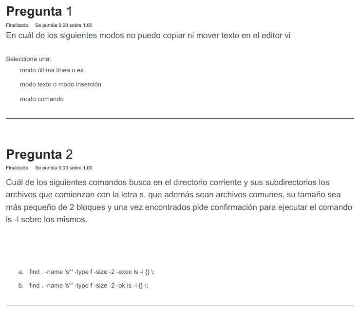
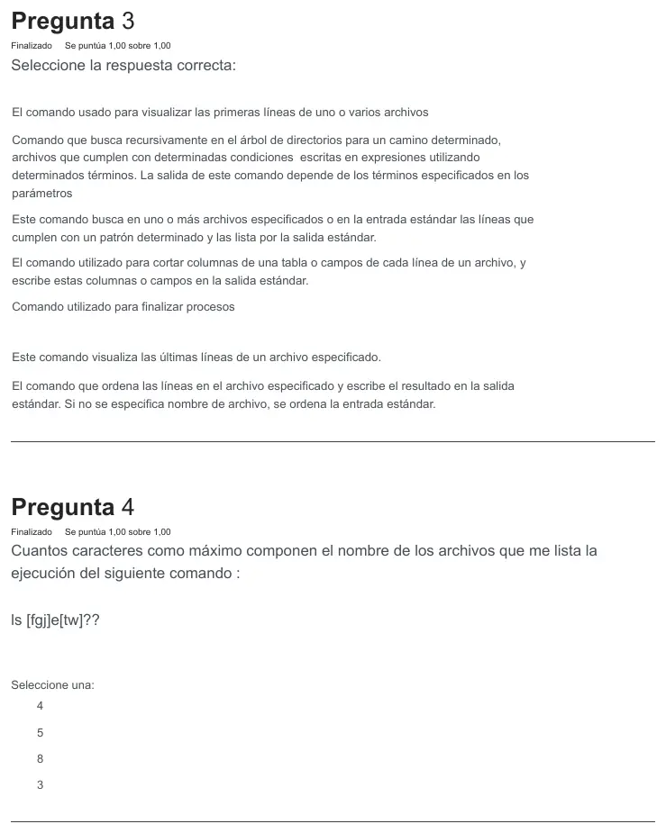
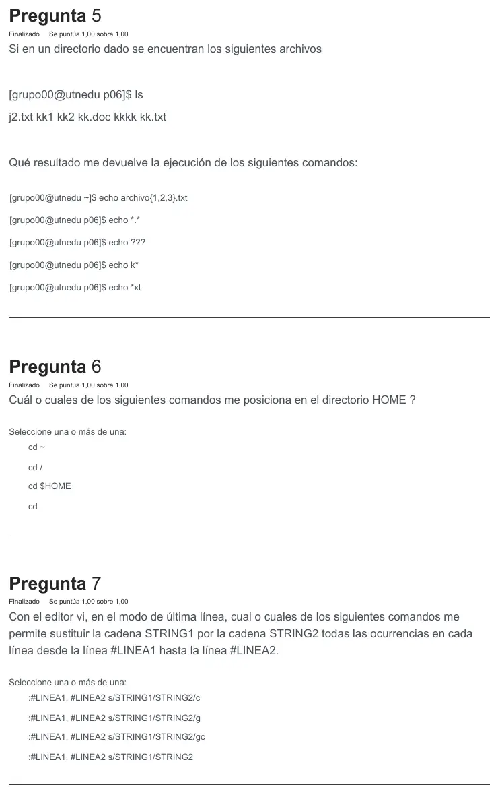
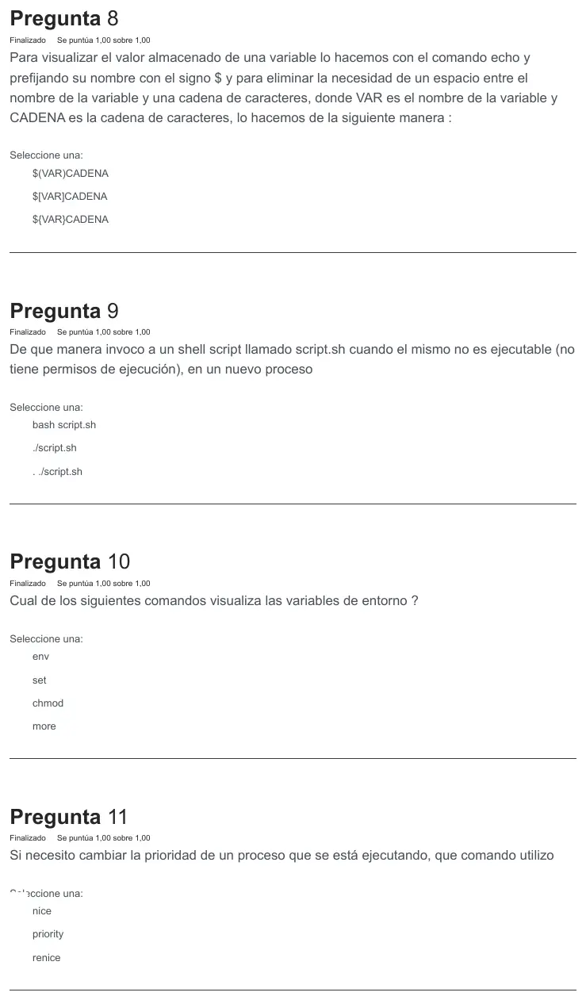
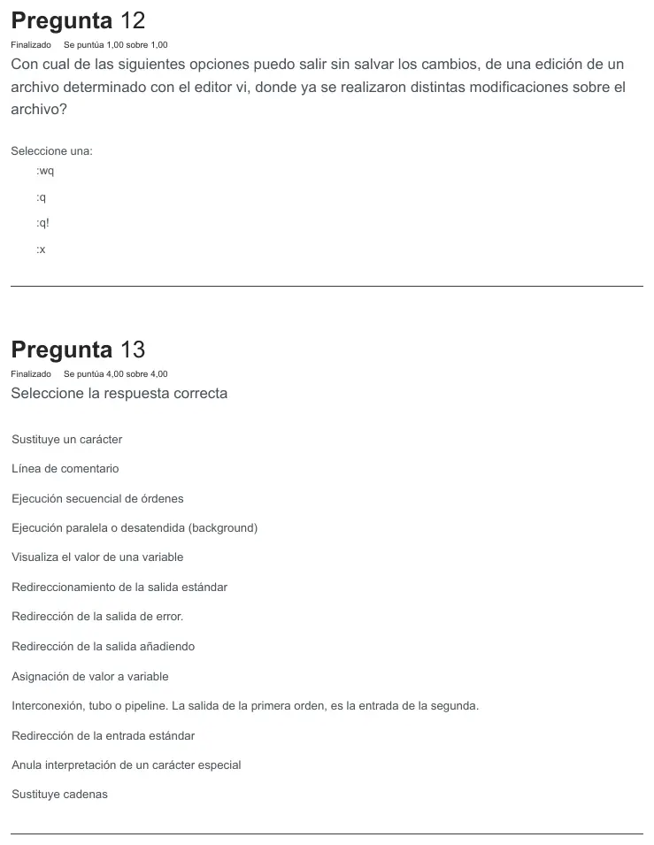
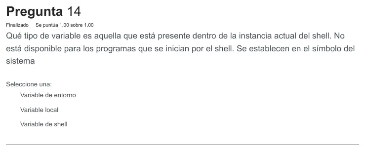

2° parcial de práctica, 02/11/2023
2° parcial, práctica, 02/11/2023
Enunciado












Propuesta de respuesta
Respuesta no verificada. La propuso Luta Studios con inteligencia artificial y ningún docente la revisó. Puede tener errores.
| Pregunta | Respuesta | Por qué |
|---|---|---|
| 1 | Modo texto o modo inserción | Copiar y mover se hacen en modo comando y en modo última línea. En inserción las teclas solo ingresan caracteres |
| 2 | b. find . -name 's*' -type f -size -2 -ok ls -l {} \; | Las dos buscan lo mismo, pero -ok pide confirmación antes de ejecutar y -exec no |
| 4 | 5 | Cada corchete vale un carácter, la e otro y cada ? otro, así que son . Lista solo nombres de exactamente 5 caracteres |
| 6 | cd ~, cd $HOME y cd | cd solo lleva al HOME, ~ es el HOME y $HOME es la variable que lo guarda. cd / va a la raíz |
| 7 | :#LINEA1, #LINEA2 s/STRING1/STRING2/g y :#LINEA1, #LINEA2 s/STRING1/STRING2/gc | La g cambia todas las ocurrencias de cada línea. La c solo agrega la confirmación |
| 8 | ${VAR}CADENA | Las llaves separan el nombre de la variable de la cadena que sigue |
| 9 | bash script.sh | No hace falta permiso de ejecución y corre en un sub-shell. ./script.sh necesita el permiso y . ./script.sh corre en el shell actual |
| 10 | env | Muestra solo las variables de entorno. set muestra también las demás |
| 11 | renice | Cambia la prioridad de un proceso que ya corre, por su PID. nice lanza uno nuevo |
| 12 | :q! | Sale sin guardar aunque haya cambios. :q no sale si hubo cambios, y :wq y :x guardan |
| 14 | Variable local | Está presente en la instancia actual del shell y no está disponible para los programas que inicia |
Pregunta 3. Es de unir.
| Descripción | Comando |
|---|---|
| Visualiza las primeras líneas de uno o varios archivos | head |
| Busca recursivamente en el árbol de directorios archivos que cumplen condiciones | find |
| Busca en uno o más archivos o en la entrada estándar las líneas que cumplen un patrón | grep |
| Corta columnas de una tabla o campos de cada línea | cut |
| Finaliza procesos | kill |
| Visualiza las últimas líneas de un archivo | tail |
| Ordena las líneas y escribe el resultado en la salida estándar | sort |
Pregunta 5. Con los archivos j2.txt kk1 kk2 kk.doc kkkk kk.txt:
echo archivo{1,2,3}.txt # archivo1.txt archivo2.txt archivo3.txt
echo *.* # j2.txt kk.doc kk.txt
echo ??? # kk1 kk2
echo k* # kk1 kk2 kk.doc kkkk kk.txt
echo *xt # j2.txt kk.txtLas llaves arman las cadenas aunque los archivos no existan. *.* pide un punto en el medio, ??? exactamente tres caracteres, k* que empiece con k y *xt que termine en xt.
Pregunta 13. Es de unir, y vale 4 puntos.
| Función | Metacarácter |
|---|---|
| Sustituye un carácter | ? |
| Línea de comentario | # |
| Ejecución secuencial de órdenes | ; |
| Ejecución paralela o desatendida (background) | & |
| Visualiza el valor de una variable | $ |
| Redireccionamiento de la salida estándar | > |
| Redirección de la salida de error | 2> |
| Redirección de la salida añadiendo | >> |
| Asignación de valor a variable | = |
| Interconexión, tubo o pipeline | | |
| Redirección de la entrada estándar | < |
| Anula interpretación de un carácter especial | \ |
| Sustituye cadenas | * |
Respuesta no verificada. Puede tener errores.
Se armó con Resumen del 2° parcial de práctica, secciones El editor vi, find, Comodines, Variables, Tres formas de invocar un script, Prioridad, find, grep y compañía y Metacaracteres, con las Prácticas 06 a 10.
Quedó en duda: En la 5, el orden de k* es el mismo en que la hoja lista los archivos con ls. Otra configuración de idioma del sistema los puede ordenar distinto, con los mismos nombres. En las de unir, la 3 y la 13, las opciones de cada desplegable no se ven en la imagen. En la 13, el # del comentario no está en la tabla de metacaracteres del resumen. La respuesta no sale del material de la materia, así que confirmala con la Práctica 06. La 1 sale de cómo el apunte ordena los modos de vi, no de una frase textual.
¿Cómo te fue?
Marcá cada tema del examen.
- viEl editor vi, en 2° parcial, práctica
- findfind, en 2° parcial, práctica
- comodinesComodines, en 2° parcial, práctica
- variablesVariables, en 2° parcial, práctica
- niceCómo viene el examen, en 2° parcial, práctica
- envVariables, en 2° parcial, práctica